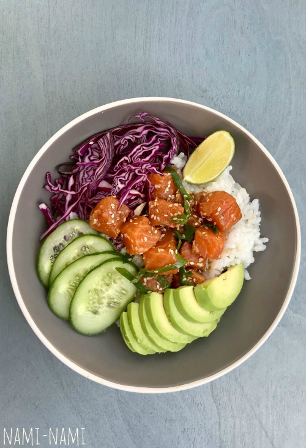

Poce kauss lõhega

Poce kausi tegemiseks on vaja
- 250 g suširiisi
- 2 sl + 2 sl riisiäädikat
- 2 tl suhkrut
- 0,5 tl soola
- 4 sl sojakastet
- 1 tl vasaabipastat
- 2 tl mett
- 300 g hästi kvaliteetset lõhefileed
- 2 rohelise sibula vart
- 1 sl seesamiseemneid
- 2 küpset avokaadot
- 0,5 pikka kurki või 1-2 avamaakurki
- 150 g punast kapsast
Valmistamine
- Eemalda kalafileelt pindmised luud (seda on hea teha spetsiaalsete pintsettidega).
- Tõsta forelli- või lõhefilee ahjuvormi, maitsesta sidrunipipraga.
- Sega omavahel majonees, hakitud till ja sinep, maitsesta sidrunipipraga.
- Määri majoneesikaste kalafileele.
- Kata vorm pealt fooliumiga ning küpseta 200kraadises ahjus 30 minutit.
- Eemalda foolium umbes 5 minutit enne küpsemisaja lõppu, et vormiroog saaks kauni jume.
võetud materjal.